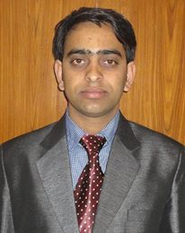
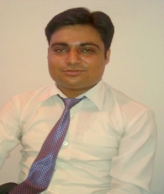
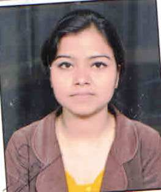
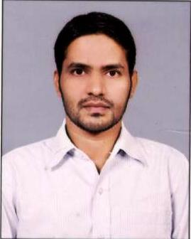
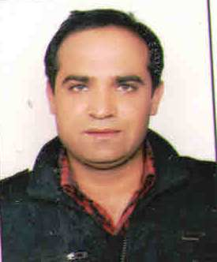

Menu ITG
Menu
Home
People
Faculty
Staff
Facilities
Activities
WorkShop
Expert Lectures
ITG Home
Faculty In Department of Electronics & Communication Engineering
Head of Department

Mr. Vishwanath Bijalwan
Assistant Professor
M.Tech. (DIT Dehradun), B.Tech. (UPTU,Lucknow)
Research Interests :
Basic Electronics Engineering,Digital Electronics Engineering, Digital Signal processing, Wireless Sensor Network.
Assistant Professor

Mr. Arun Uniyal
Assistant Professor
M.Tech. (DIT Dehradun), B.Tech. (Kurushetra University )
Research Interests :
Wireless Mobile Communication, Basic Electronics Engineering

Ms. Meenu Chinwan
Assistant Professor
M.Tech., B.Tech. (UTU, Dehradun )
Research Interests :
Microstrip Patch Anteena, WMC

Mr. Arvind Kumar
Assistant Professor
M.Tech. (UTU, Dehradun), B.Tech. (GBPEC,Pauri Garhwal)
Research Interests :
VLSI Design, Signal and Systems, Control Systems, EDC

Mr. Pramod Benjwal
Assistant Professor
M.Tech. , B.Tech. (UTU,Dehradun)
Research Interests :
DSP
Powerd By: Department of Computer Science and Engineering
All Right Reserved:Institute of Technology Gopeshwar